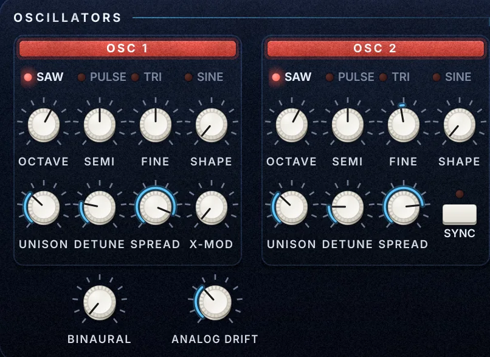

OSCILLATORS
Deux oscillateurs · page SYNTH
Deux oscillateurs anti-aliasés avec unisson jusqu'à 7 voix par note. C'est d'eux que viennent la rondeur des pads et le gras des reese.

- Wave
- Saw · Pulse · Tri · Sine
- La forme d'onde. Chaque forme a sa propre façon de réagir au bouton Shape.
- Octave
- −3 à +2
- Le registre de l'oscillateur, par octaves.
- Semi
- ±12 demi-tons
- Décale l'oscillateur en demi-tons : quinte, octave, accords parallèles.
- Fine
- ±100 cents
- L'accordage fin. Un léger écart entre OSC 1 et OSC 2 épaissit tout de suite le son.
- Shape
- 0 – 100 %
- Saw : mélange une impulsion. Pulse : largeur d'impulsion (PWM). Tri : glisse vers la rampe. Sine : repli d'onde (wavefold).
- Unison
- 1 – 7 voix
- Le nombre de copies jouées pour chaque note.
- Detune
- 0 – 100 %
- L'écart d'accordage entre ces copies : le fameux son large et mouvant.
- Spread
- 0 – 100 %
- Répartit les copies de gauche à droite dans la stéréo.
- X-Mod
- 0 – 100 %
- Modulation de fréquence de l'OSC 2 vers l'OSC 1 : du métallique, des cloches, du mordant.
- Sync
- On / Off
- Synchronisation dure de l'OSC 2 sur l'OSC 1, pour les leads qui crient.
- Binaural
- 0 – 100 %
- Chaque voix joue la gauche et la droite très légèrement désaccordées : la largeur des pads et des reese, sans chorus.
- Analog Drift
- 0 – 100 %
- Une dérive lente de hauteur et un calibrage différent par voix, comme un vrai synthé analogique.